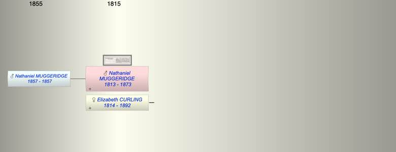

| [Index] |
| Nathaniel MUGGERIDGE (1813 - 1873) |
|  |
| b. 14 Feb 1813 at Battersea, London |
| +. Elizabeth CURLING (1814 - 1892) |
| d. 17 Mar 1873 at Worthing aged 60 |
| Children (1): |
| Nathaniel Alexander MUGGERIDGE (1857 - 1857) |
| Events in Nathaniel MUGGERIDGE (1813 - 1873)'s life | |||||
| Date | Age | Event | Place | Notes | Src |
| 14 Feb 1813 | Nathaniel MUGGERIDGE was born | Battersea, London | ex 1851 census | ||
| 1857 | 44 | Birth of son Nathaniel Alexander MUGGERIDGE | Lewisham | Note 1 | |
| 1857 | 44 | Death of son Nathaniel Alexander MUGGERIDGE | Lewisham | Note 2 | |
| 17 Mar 1873 | 60 | Nathaniel MUGGERIDGE died | Worthing | Note 3 | |
| Note 1: bap 5 Aug 1857 St Paul Lewisham ex Ancestry PR |
| Note 2: buried 11 Aug 1857, 6 days old ex Ancestry PR |
| Note 3: late of 17 Phillimore Gardens, Kensington ex Probate |
| Created on a Mac™ using iFamily for Mac™ on 8 Oct 2023 |